Scraping is a powerful way to convert web sites into data files that you can analysis with Sheets, Excel, or even ChatGPT.
Visit https://notebooklm.google.com/ and create a new notebook.
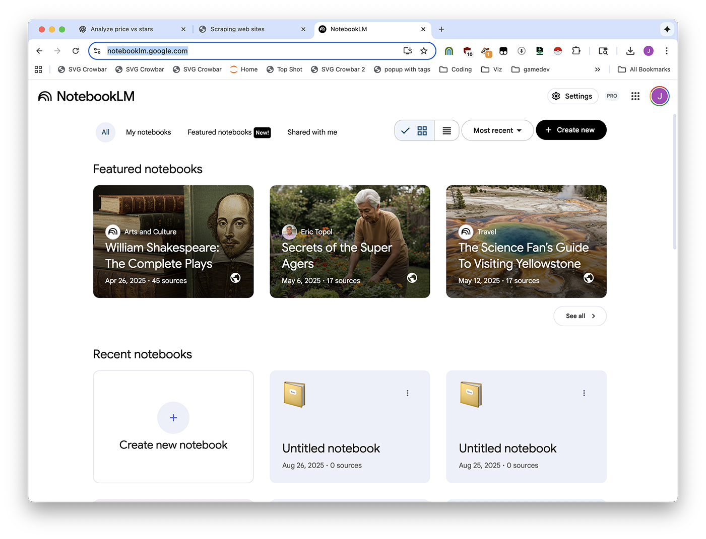
Upload your files.
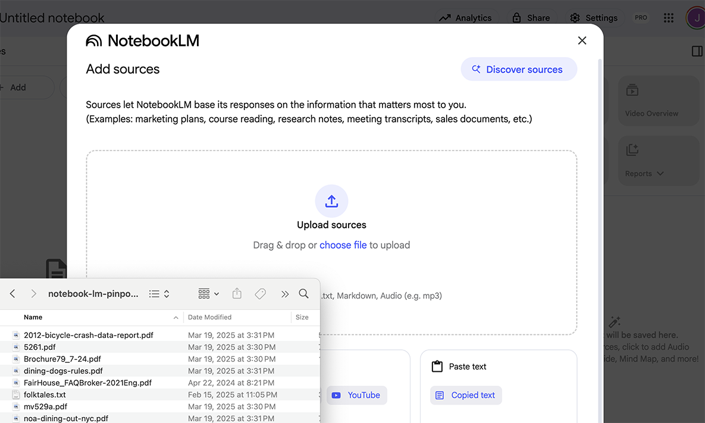
Ask your question.
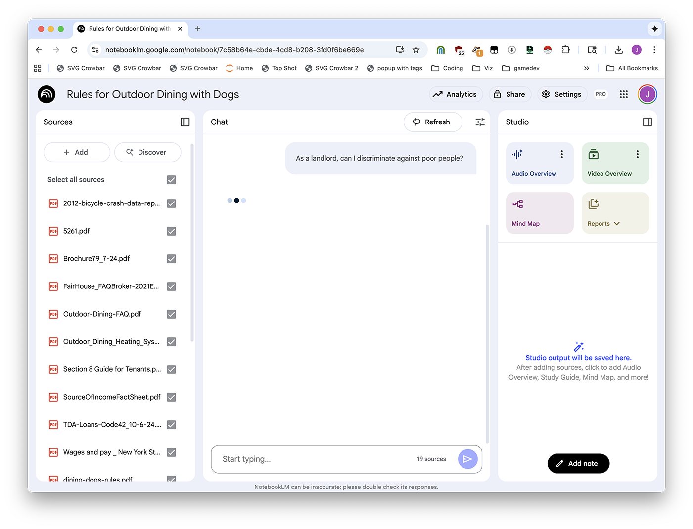
After you've installed Easy Scraper, you first need to open it by clicking the extensions button.
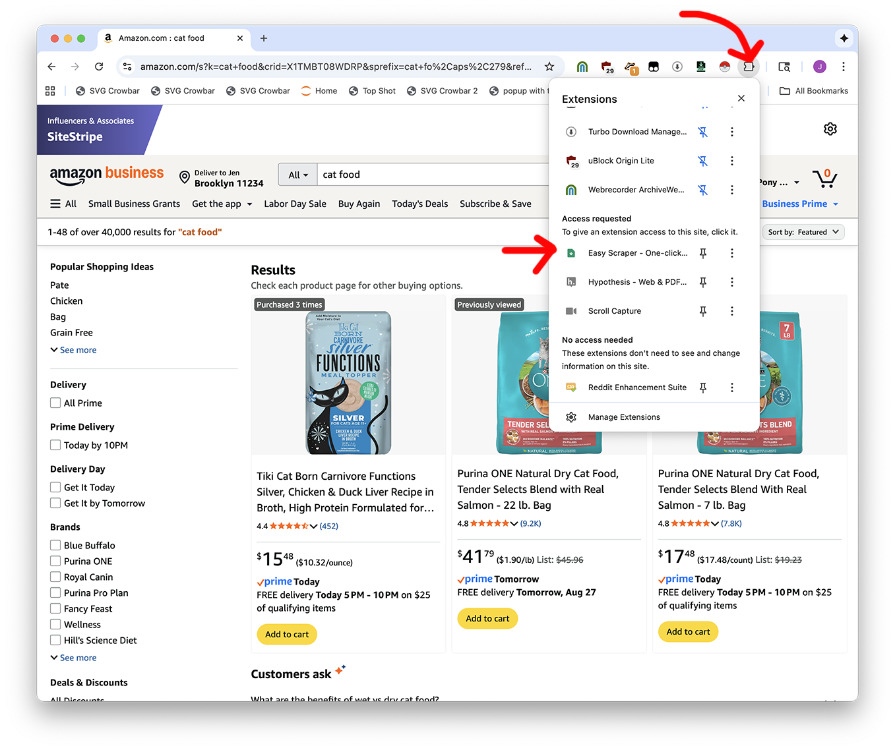
Then you might need to click "Change List" until the rows look reasonably right. Don't worry if there's extra stuff in there, you can clean it up later.
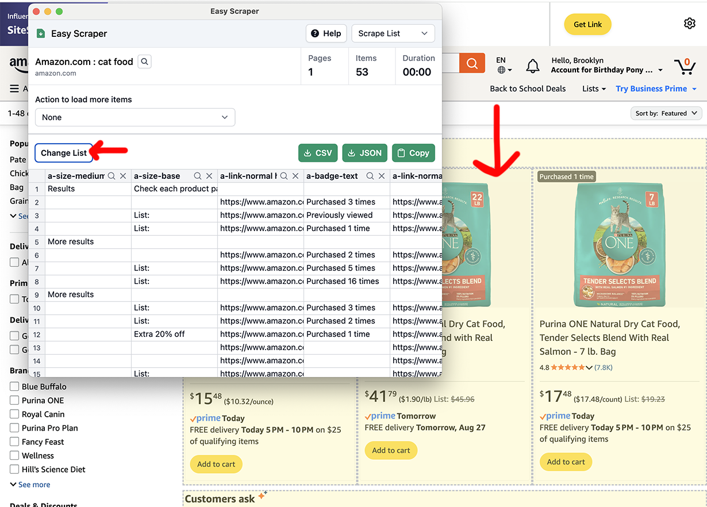
Are there multiple pages? Pick an option from the dropdown.
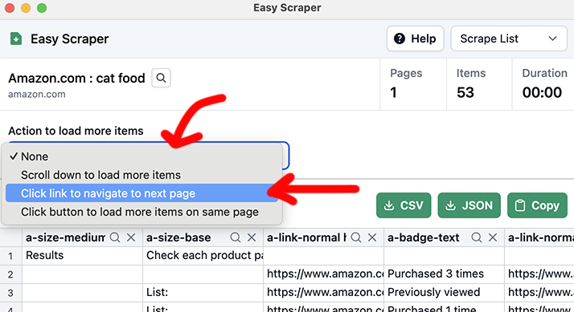
If there's a "Next" button: you'll pick Click link to navigate to next page, then Select, then click the "Next" button.
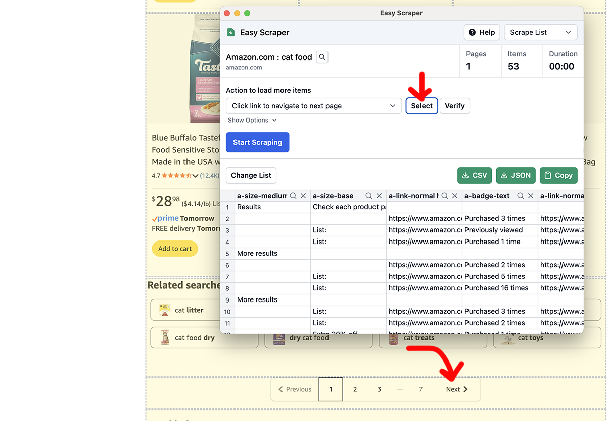
Time to Start scraping!
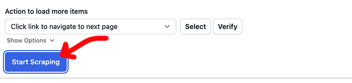
It'll go and go and go and go and go. When you want to be done, click Stop Scraping.
And in the end, export with the CSV button.
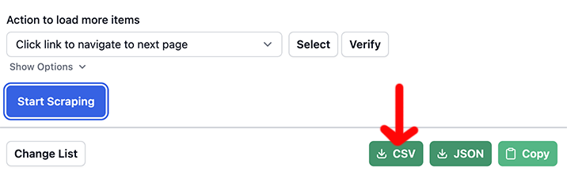
First, open up your CSV in Google Sheets or Excel.
Explain what you want to ChatGPT. Let's say you asked me, "I want to explore the data" and I said "there's a nice graphing library called Altair that will do that for you"
I have the following data in amazon-2025-08-27.csv, i want to analyze it in Google Colab and make an interactive Altair graphic that plots the price per pound vs number of stars.
(paste a few rows of data)
Then, visit Google Colab and create a New Notebook.
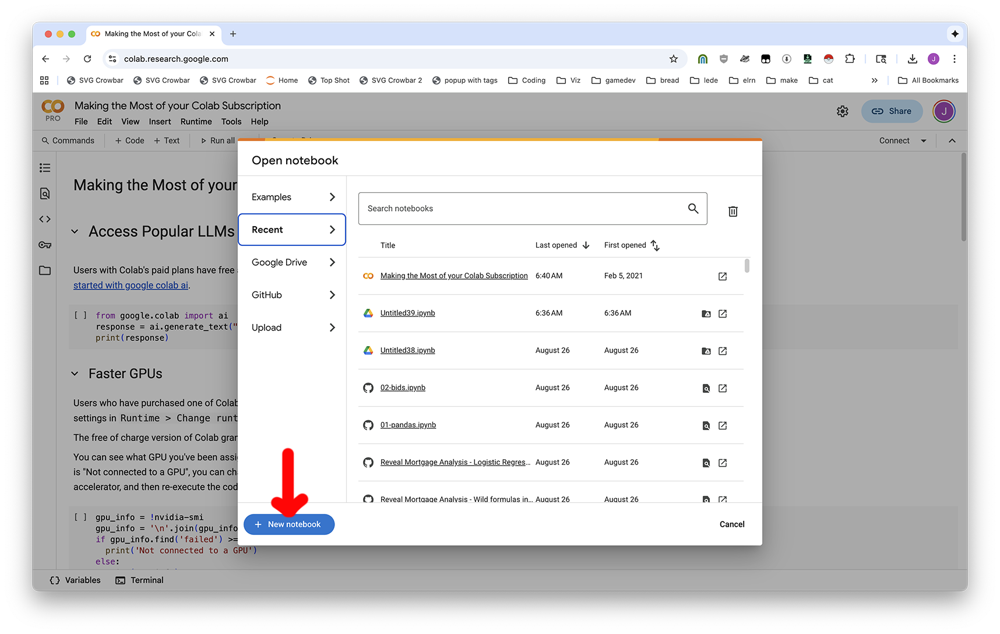
To be able to upload files, click Run all to make the notebook start, then click the Folder button on the left-hand side.
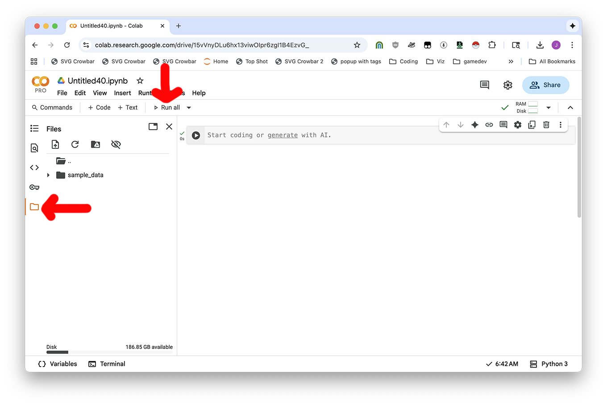
Now you can use the Upload icon or drag-and-drop files in.
Now you'll copy the code from the ChatGPT conversation and put it into your notebook. Use the + Code button to add new blocks of code, and ► Play button to run your code.
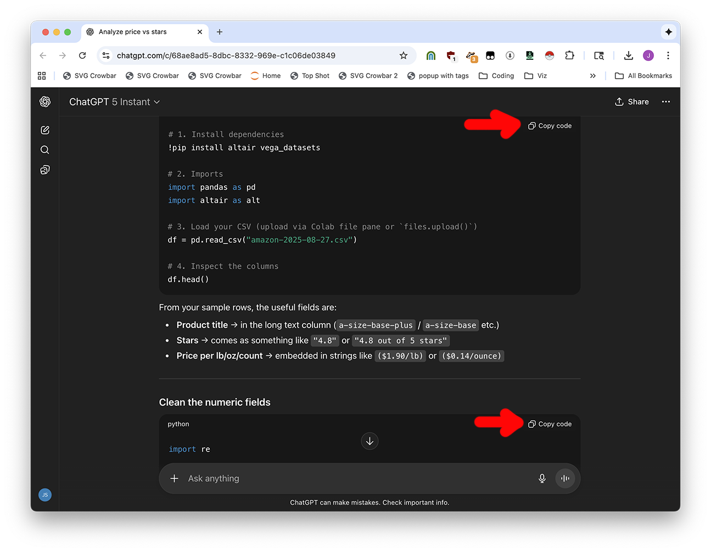
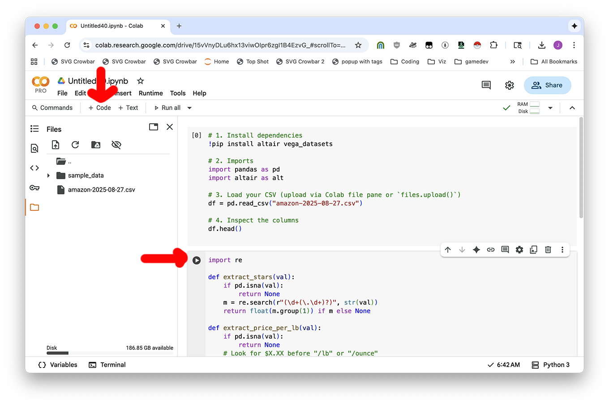
And then you'll be good to go!
If you want to clean your data or download a file analysis, just ask ChatGPT. It can give you code to create new, clean CSV files and download them to your computer from Colab.
Provide code to fully clean the file and download it as something nice I can give a data person. I'm in Google Colab.
Are there any Pristina procurement contracts that have to do with animals that live on the street?
If you're feeling fancy, scrape the list of procurement data for Prishtina and download them all (or some of them, probably) using Motrix. You can also just use the ones in this session's download materials (the procurement-sample folder.)
We can't answer questions like "what is the largest contract" without converting the procurement data into
https://colab.research.google.com/github/jsoma/2025-birn/blob/main/unstructured-data/procurement-sample-analysis.ipynb